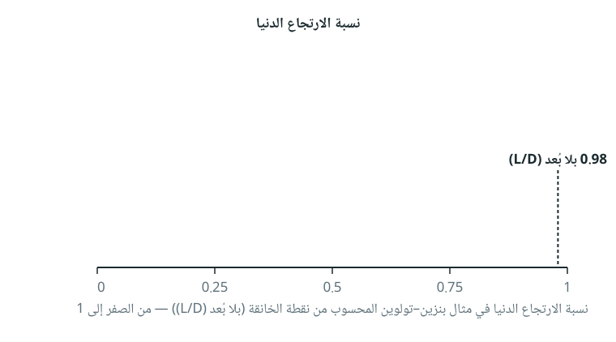

نسبة الارتجاع الدنيا
Minimum reflux ratio
أصغر نسبة ارتجاع تُنجز الفصل المطلوب بين تركيبي الناتج والقاع، وتقع عند نقطة خانقة تجعل عدد الأطباق النظرية لانهائيًا.
نسبة الارتجاع الدنيا هي الحد الأدنى لنسبة الارتجاع R = L/D التي يمكن عندها — من حيث المبدأ — تحقيق الفصل المطلوب بين تركيب الناتج العلوي xD وتركيب القاع xB. تُعرَّف في محاضرات التحليل الثنائي بأنها نسبة الارتجاع التي تتطلب عددًا لانهائيًا من الأطباق للفصل المطلوب، وهي تقابل أدنى تدفق بخار في البرج ومن ثمّ أصغر مُكثِّف ومُبخِّر. عند إنقاص R ينخفض ميل خط التشغيل العلوي R/(R+1)، فيقترب تقاطع خطَّي التشغيل مع خط التغذية من منحنى الاتزان، ويزداد عدد الدرجات اللازمة للفصل. وعند القيمة الدنيا يقع التقاطع على منحنى الاتزان نفسه في نقطة تُسمّى النقطة الخانقة، وتصير كل درجة تالية بلا تغيّر يُذكر في التركيب. وتحسب الطريقة البيانية القيمة من ميل الخط المار بالنقطة (xD, xD) والنقطة الخانقة: Rmin/(Rmin+1) = (xD − y')/(xD − x'). أما في الأنظمة المتعددة المكوّنات فتُستخرج من معادلات أندروود، التي تُحلّ أولًا لإيجاد الجذر k بين متطايرية المكوّنين المفتاحيين، ثم تُعطي Rmin من تراكيب الناتج. والقيمة حدّ نظري لا يُشغَّل عنده: التصميم العملي يختار نسبة أعلى منها، والمراجع التعليمية تذكر أن الطريقة البيانية تفقد صلاحيتها إذا نزلت النسبة دون نحو 1.1 من الحد الأدنى.
كيف تعمل الظاهرة؟
الآلية هندسية وموازنة معًا: خط التشغيل العلوي y = [R/(R+1)]x + xD/(R+1) يمر بالنقطة (xD, xD) وميله R/(R+1). عند إنقاص R يقلّ الميل فيدور الخط حول نقطته الطرفية ويقترب من منحنى الاتزان. وخط التغذية y = [q/(q−1)]x − zF/(q−1) ثابت ما دامت حالة التغذية ثابتة. فإذا دار خط التشغيل حتى لامس منحنى الاتزان عند نقطة تقاطعه مع خط التغذية، صار كل انتقال بين الخط والمنحنى بلا تغيّر في التركيب: تتكدّس الدرجات في نقطة واحدة هي الخانقة، ويلزم عدد لانهائي من الأطباق. أما في الأنظمة المتعددة المكوّنات فتُستبدل الهندسة بمعادلات أندروود: تُحلّ المعادلة الأولى لإيجاد k، ثم تُحسب Rmin من تراكيب الناتج.
العلاقة بالأرقام
في الحالة الثنائية: Rmin/(Rmin+1) = (xD − y')/(xD − x')، حيث (x', y') نقطة تقاطع خط التغذية مع منحنى الاتزان. وفي مثال بنزين–تولوين المرجعي (q = 1، xD = 0.95، xB = 0.10، 101.3 kPa) يكون الميل ≈ 0.496 ومنه Rmin ≈ 0.98، بينما اختير في المثال نفسه R = 4 أي نحو أربعة أمثال الحد الأدنى. وفي الأنظمة المتعددة: مجموع αi·xiF/(k − αi) = 1 − q ثم Rmin + 1 = مجموع αi·xiD/(αi − k)، والجذر k محصور بين متطايريتَي المكوّنين المفتاحيين. وتذكر المحاضرة المرجعية أن الطريقة البيانية تُهمَل إذا نزلت النسبة دون 1.1 من الحد الأدنى.
مفاهيم متقاربة
التمييز الأول: الارتجاع الكلي يعطي أقل عدد أطباق (Nmin من معادلة فينسكي) وأعلى ارتجاع ممكن؛ والارتجاع الأدنى يعطي أقل ارتجاع ممكن وعددًا لانهائيًا من الأطباق. الخلط بينهما يعكس المعنى. التمييز الثاني: نسبة الارتجاع الدنيا خاصية للفصل المطلوب وحالة التغذية، لا للبرج؛ فتغيير q أو xD أو xB يغيّرها. التمييز الثالث: في المخاليط غير المثالية قد يقع التحكم عند تماس مماسّي مع منحنى الاتزان بعيدًا عن تقاطع خط التغذية، فلا يصحّ حساب الحد الأدنى من تقاطع خط التغذية وحده، بل يجب فحص خط التشغيل على كامل مجال التركيب.
حدود التطبيق
الحد الأدنى حدّ رياضي لا حالة تشغيل: عنده لا يُنجَز الفصل في زمن محدود، ولا يُشغَّل برج عنده. والحساب البياني يفترض تدفقًا موليًا ثابتًا داخل كل قسم، واتزانًا معروفًا عند ضغط التشغيل؛ فأي خطأ في منحنى الاتزان ينتقل إلى Rmin. وفي الأنظمة المتعددة المكوّنات تعتمد معادلات أندروود على ثبات المتطايرية النسبية، وهي تقريب. ولا تُقرأ النسبة وحدها كدليل كفاءة طاقة: اختيار نسبة أعلى يقلّل الأطباق ويزيد الحمل الحراري، والموازنة بينهما قرار تصميم لا يحدده الحد الأدنى.

| الكمية | القيمة | المصدر |
|---|---|---|
| نسبة الارتجاع الدنيا في مثال بنزين–تولوين المحسوب من نقطة الخانقة | 0.98 بلا بُعد (L/D) | [1] |
| عدد الأطباق النظرية عند نسبة الارتجاع الدنيا | لانهائي طبق نظري | [1] |
| أدنى نسبة ارتجاع تُعدّ عندها الطريقة البيانية صالحة في المراجع التعليمية | 1.1 مضاعف من Rmin | [1] |
| مجال الجذر k في معادلة أندروود الأولى | بين متطايريتَي المكوّنين المفتاحيين بلا بُعد | [2] |
المصادر
- 1 Mass Transfer Operations — Lec 11: Analysis of Binary Distillation, McCabe-Thiele Graphical Method — University of Jordan, Chemical Engineering Department (2020). www.madar-ju.com/storage/images/files/file_1738604639yn0Ju.pdf · اطُّلع عليه 2026-11-28
- 2 Minimum Reflux Ratio Calculation by Underwood Method — PreFEED Corporation (2010). www.prefeed.com/common/pdf/1011E.pdf · اطُّلع عليه 2026-11-28
- 3 Distillation pinch points and more — Elsevier — Computers & Chemical Engineering (2008). cepac.cheme.cmu.edu/pasi2008/slides/aguirre/library/readings/min_energy_year_2008_review.pdf · اطُّلع عليه 2026-11-28
استشهد بهذا المصطلح
الصيغتان مبنيتان من بيانات الصفحة نفسها: العنوان والتاريخ ورابط النسخة المنشورة.
نسبة الارتجاع الدنيا — Minimum reflux ratio. (2026). ديوان المعرفة — انفراد. https://infiradev.com/diwan/terms/term-minimum-reflux-ratio.html
@misc{term-minimum-reflux-ratio2026,
title = {نسبة الارتجاع الدنيا},
titleaddon = {Minimum reflux ratio},
howpublished = {{ديوان المعرفة — انفراد} — مرجع علمي عربي},
year = {2026},
url = {https://infiradev.com/diwan/terms/term-minimum-reflux-ratio.html},
urldate = {2026-11-28},
note = {مراجعة علمية: Abdullah Al-Huwaidi}
}
راجعه: Abdullah Al-Huwaidi · 2026-11-28 · آخر تحديث 2026-11-28